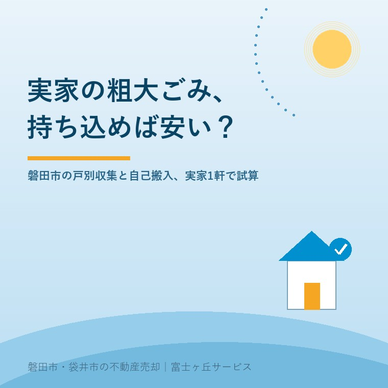

2026年8月29日｜カテゴリ：実家じまい／残置物

この記事の要点
Q. 実家の家具を片付けるんですが、市に頼むのと自分で持っていくの、どっちが安いですか。
A. 品物によって逆になります。磐田市の戸別収集は1個210円（＋基本料金1,040円）、クリーンセンターは10kgあたり157円。1個13.4kgが分かれ目で、タンスやソファは予約したほうが安い。金物は中遠広域へ運べば軽トラック満載でも520円です。
磐田市・袋井市・森町では、介護施設の運営から不動産事業を始めた富士ヶ丘サービスのような「介護×不動産」専門の会社に相談するという選択肢があります。
実家の片付けを始めた方から、たいてい同じ順番で質問が来ます。名義でも境界でもなく、まず「このタンス、どうやって捨てるんですか」です。売却の相談のはずが、最初の1時間は粗大ごみの話で終わることも珍しくありません。家財が片付かないと、家の話が前に進まないからです。
この記事は2026年8月29日時点で、磐田市の公式ページ（粗大ごみの戸別収集・可燃ごみの持ち込み・金物等の持ち込み・市で収集処理できないごみ・民間許可業者による有料粗大ごみ戸別収集）と、中遠広域事務組合の公式ページを確認して書いています。袋井市と森町は料金体系も搬入先も別に定められているため、この記事は磐田市に絞りました。片付けそのものの手順は遺品整理はどこから手をつけるかにまとめてあります。
磐田市の粗大ごみ戸別収集は、品目ごとの料金表ではなく、基本料金に個数を足していく方式です。基本料金が1,040円、そこへ品物1個につき210円が加わります。市が示している例は次の2つです。
粗大ごみ4個の場合＝1,040円＋（210円×4個）＝1,880円
家電リサイクル法対象品2点を含む3個の場合＝1,040円＋（210円×3個）＋（1,100円×2点）＝3,870円＋家電リサイクル券2枚（磐田市「粗大ごみの戸別収集」2026年4月24日更新／2026年8月29日確認）
この料金体系には、片付ける側にとって効き方がはっきりした癖があります。基本料金1,040円が1回ごとにかかるので、点数が少ないほど割高になる。1個だけ出すと1,250円、つまり1個あたり1,250円です。10個まとめれば3,140円で、1個あたり314円まで下がります。実家1軒ぶんのように点数が多い片付けでは、この方式は不利ではありません。
申込先は磐田市ごみ資源循環課の資源循環推進グループ（電話0538-37-4812、受付は午前8時30分から午後5時15分まで）です。市公式LINEアカウントからの申請もできます。支払いは現金またはPayPay。収集日は月曜から金曜までで、祝日と年末年始は除かれます。
制限も見ておいてください。原則として1世帯につき月1回まで。1個の大きさは一番長い部分が2m以内、重さ80kg以下。当日に品物を追加することはできず、引越しや解体で出た大量のごみは戸別収集では扱えません。実家じまいで詰まるのは、料金より先にこの「月1回」です。
磐田市クリーンセンター（磐田市刑部島301）への自己搬入は、重量制です。ごみの重量が10kgあたり157円、つまり1kgあたり15.7円になります。受付は月曜から金曜の午前8時30分から午後4時15分まで、第2・第4日曜日と祝日は午前8時30分から午後0時45分まで（祝日が土曜または第1・第3・第5日曜にあたる場合は休場）。事前予約は不要で、計量棟に使用申請書を出します。支払いは現金のみです。
ここで、戸別収集の1個210円と突き合わせます。210円÷15.7円＝13.4kg。この重さを超える品物は、持ち込むより戸別収集で出したほうが安い。洋服タンス、食器棚、木製ベッド、ソファ、こたつは、まず全部この線を超えます。
粗大ごみは持ち込めば安い、という思い込みは、磐田市の可燃系ではきれいに逆になります。私はここで一度、自分の説明を直しました。以前は「軽トラックがあるなら持っていったほうが早くて安い」と言っていましたが、単価を割り戻して初めて、重い家具ではそうならないと分かりました。
基本料金1,040円を含めた分岐点も出しておきます。品物の平均重量が下の値を超えるなら、戸別収集のほうが安くなります。
| 出す個数 | 戸別収集の料金 | この平均重量を超えたら戸別収集が安い |
|---|---|---|
| 5個 | 2,090円 | 1個あたり約27kg |
| 10個 | 3,140円 | 1個あたり20.0kg |
| 20個 | 5,240円 | 1個あたり約17kg |
大石による試算。戸別収集＝1,040円＋210円×個数、クリーンセンター＝10kgあたり157円で計算しています。10個・平均20kgなら、戸別収集3,140円に対し自己搬入も200kg＝3,140円でちょうど並びます。
金物・不燃・小型家電・有害ごみ・埋立ごみの搬入先は、磐田市クリーンセンターではありません。中遠広域粗大ごみ処理施設（磐田市新貝59-1）です。受付は午前9時から正午、午後1時から午後4時30分まで。土日祝日と年末年始は休みで、入場できるのは2トン車以下です。
この施設の料金は、重量制ではありません。中遠広域事務組合の説明は、はっきりこう書いています。
「手数料はごみの量ではなく、車両の積載量（大きさ）により区分されています」（中遠広域事務組合／2026年8月29日確認）
| 車両の最大積載量 | 手数料 |
|---|---|
| 0.5トン以下（軽トラックなど） | 520円 |
| 0.5トン超1.0トン以下 | 1,040円 |
| 1.0トン超1.5トン以下 | 1,570円 |
| 1.5トン超2.0トン以下 | 2,090円 |
軽トラック1台なら、荷台に何を何個積んでも520円。自転車も物干し台も石油ファンヒーターもスチール棚も鍋も、1台にまとめれば520円で終わります。これを戸別収集で出すと、8個で1,040円＋1,680円＝2,720円です。差は2,200円。金物については、自己搬入のほうが圧倒的に有利です。事前予約は要りませんが、来場したら事務所で申請手続きをします。
数字を1軒ぶんにまとめます。磐田市内の実家で、6畳2間ぶんの家財を出す設例です。洋服タンス2棹（各50kg）、食器棚1（60kg）、木製ベッド1（45kg）、2人掛けソファ1（35kg）、こたつ1（20kg）、座椅子2（各6kg）、じゅうたん6畳用2枚（各15kg）、布団一式2組（各8kg）。合計12個・318kgとします。
| 戸別収集を予約する | クリーンセンターへ運ぶ | |
|---|---|---|
| 計算 | 1,040円＋210円×12個 | 318kg÷10kg×157円 |
| 料金 | 3,560円 | 4,990円 |
| 差 | 戸別収集のほうが1,430円安い | |
| 回数 | 原則1世帯月1回。12個を1回で出せる範囲か要確認 | 1日2回まで。分けて運べる |
| 待ち | 3週間から1か月程度先になることがある | 予約不要。開いていればその日に |
| 要る道具 | 玄関先まで出す人手 | 車両と積み下ろしの人手 |
大石による設例。重量は当社が実家じまいの現場で扱う家具のおおよその目安であり、実測値ではありません。クリーンセンターの料金は10円未満を切り捨てて計算しています。
料金の差は1,430円です。正直に言えば、この金額のために軽トラックを手配する価値があるとは私は思っていません。差が出るのは料金ではなく、時間のほうです。戸別収集は月1回しか使えず、予約が1か月先になることもある。持ち込みなら、その日のうちに終わります。売却の日程が決まっている実家では、この違いが料金の差を軽く飛び越えます。家財を残したまま売る選択については現況有姿・残置物ありで売る方法に整理しました。
磐田市の粗大ごみ戸別収集は事前予約制で、公式ページは希望日の2週間前までの申込を求めています。ただし、そのすぐ後に待ち時間の注記が続きます。
「事前予約制です。原則として希望日の2週間前までにお申し込みください。予約状況により希望の日程に添えない場合があります。（3週間から1か月程度先のご予約となることがあります。）」（磐田市「粗大ごみの戸別収集」／2026年8月29日確認）
「粗大ごみの申し込みから収集まで、時期によっては1カ月以上かかる場合があります。余裕をもって申し込みください。特に、年末や年度末は、粗大ごみの申し込みが増加しますのでご注意ください。」（磐田市「LINEで粗大ごみの申請ができます」2026年5月27日更新／2026年8月29日確認）
混む時期を市が名指ししているのは、年末と年度末です。実家じまいの相談が増えるのは、お盆と年末年始と、相続税の申告期限が近づく時期。つまり、片付けたい人が増える時期と、予約が取りにくい時期はかなり重なります。
売却の段取りから逆算するとどうなるか。引渡しの前に家財を空にする契約なら、収集日を引渡日の3週間前には終わらせておきたい。その予約に1か月かかるとすると、申込は引渡日のおよそ2か月前です。売り出しから引渡しまでの全体の流れは実家売却の段取りと期間に月単位で並べてあります。
自己搬入できないほど量が多い場合の受け皿も、市が用意しています。令和5年4月1日に始まった「民間許可業者による有料粗大ごみ戸別収集」で、対象は「引越しや遺品整理により多量の粗大ごみ等を処理施設に自己搬入できない方」。市が許可した一般廃棄物収集運搬業者が有料で処分を行います。料金は業者ごとに違うため、市は直接事業者に確認するよう案内しています。市は再利用の導線として「おいくら」とジモティーの2社とも連携協定を結んでいます。
テレビ・エアコン・冷蔵庫と冷凍庫・洗濯機と衣類乾燥機は、家電リサイクル法の対象品です。磐田市では、この4品目の扱いが搬入先によって逆になります。戸別収集では1点につき運搬料1,100円と家電リサイクル券を用意すれば回収してもらえます。一方、中遠広域粗大ごみ処理施設への持ち込みはできません。
市の施設にも民間にも持ち込めない「適正処理困難物」も、名前を覚えておく価値があります。自動二輪車と自動車、消火器、プロパンガスボンベ、ガソリン・灯油・オイル、機械油、自動車解体部品、バッテリー、農薬、注射針。そして実家じまいで実際に困るのがこの3つです。
石膏ボードは、自分で片付けようとした方がいちばん引っかかるところです。壁を1面はがした時点で、市のごみ処理の外側に出ます。解体まで視野に入っているなら、内装は触らずに解体業者へ渡したほうが早い。費用の目安は実家の解体費用と壊した後の税金に書きました。
ここからは一次情報ではなく、宅地建物取引士としての私の判断です。体験談ではなく、料金表を読んだうえでの考えとして書きます。
実家1軒ぶんなら、私は2つのルートを併用することを勧めています。木製の大物家具は戸別収集で予約する。金物・不燃は軽トラック1台にまとめて中遠広域へ持ち込む。前者は1個あたりの単価が重量と無関係で、後者は重量が料金と無関係だからです。どちらも、その施設がいちばん安くなる方向に使うことになります。
そのうえで、迷っていることがあります。私は、遺族の方に軽トラックを借りてまで自分で運ぶことを勧めるべきか、いまだに決めかねています。差額は1軒で数千円です。積み下ろしでけがをした話も聞きますし、真夏の日中に70代の方が家具を運ぶ場面を想像すると、金額の話ではなくなる。一方で、自分の手で家財を運び出したことが、後になって効いてくる方もいます。ここは損得で答えを出せていません。
もう1つ、確認しきれていない点を残しておきます。減免制度は、身体障がい者手帳1級から3級の方のみの世帯と、70歳以上のみの世帯を対象に、民生委員の確認を経て基本料金1,040円を免除するものです。親がまだ住んでいるうちなら使える可能性がありますが、空き家になった後にどう扱われるかは、公式ページの記載からは読み切れませんでした。該当しそうなら、申し込む前にごみ資源循環課へ聞いてください。
電気も水道も止めた実家を放置したまま片付けを先延ばしにすると、家財の傷み方が変わります。夏に何が起きるかは夏の一か月で空き家に起きることに書きました。家は、住まなくなった日から傷み始めます。片付けはその速度を落とす作業でもあります。
この3つは、売ると決めていなくてもできます。今日、結論を出す必要はありません。ただ、家財の量と搬入先が分かっていると、処分費の見積りを他社から受け取ったときに、その額が妥当かどうかを自分で判断できます。
私たちが目指しているのは「高く売る」だけではなく、「家族が困らない売却」です。処分費は、売却の相談で最初に出てきて、最後まで金額が読めないままになりがちな項目です。家財の量を見て、市の収集で済む部分と業者に頼む部分を分けるところまでは、価格の話をする前にお手伝いできます。家の状況を整理する道具として、ふじがおか実家カルテを用意しています。
ふじがおか実家カルテ｜家財の量から、片付けの順番を決めます
「このタンス、どうやって捨てるのか」から相談して構いません。
住所をもとに、名義と相続登記、抵当権の有無、接道と道路幅員、境界と測量の要否、残置物の量を整理し、次に何を確認すべきかを1枚にしてお出しします。作成料0円・入力約1分。申込みだけで売却依頼にはなりません。
収集の可否と料金の最終判断は磐田市ごみ資源循環課へ、相続した家財の所有権や遺品の扱いは弁護士または司法書士へ、譲渡所得と処分費の取扱いは税理士へご確認ください。
1個いくらという料金ではありません。磐田市の戸別収集は基本料金1,040円に、品物1個につき210円を足す方式です。市の示す例では4個で1,880円になります。家電リサイクル法の対象品を含む場合は、1個につき運搬料1,100円とリサイクル券が別にかかります。身体障がい者手帳1級から3級の方のみの世帯と70歳以上のみの世帯は、民生委員の確認を経て基本料金1,040円が免除されます（2026年8月29日確認）。
品物によって逆になります。磐田市クリーンセンターの可燃系は10kgあたり157円、つまり1kgあたり15.7円です。戸別収集の1個210円と比べると1個13.4kgが分かれ目で、これを超えるタンスやソファは戸別収集のほうが安くなります。一方、金物や不燃を受け入れる中遠広域粗大ごみ処理施設は重量ではなく車両の最大積載量で決まり、0.5トン以下なら満載でも520円です（2026年8月29日確認）。
磐田市は原則として希望日の2週間前までの申込を求めていますが、公式ページには「予約状況により3週間から1か月程度先のご予約となることがあります」と書かれています。市公式LINEの申請ページには「時期によっては1カ月以上かかる場合があります」「特に、年末や年度末は、粗大ごみの申し込みが増加します」とあります。売却や解体の日程が決まっているなら、逆算して先に予約を取ってください。

この記事を書いた人：大石浩之（宅地建物取引士）
磐田市・袋井市・森町で「介護×相続×空き家」に特化した不動産売却支援を行う富士ヶ丘サービスの代表取締役・宅地建物取引士。介護施設の運営から不動産事業を始めた経験をもとに、売主とご家族が困らない売却を一件ずつお手伝いしています。プロフィール
本記事は2026年8月29日時点で磐田市および中遠広域事務組合が公表している情報に基づく一般的な整理であり、個別の品物の受入れ可否を判断するものではありません。料金の試算はすべて大石による設例で、家具の重量は現場での目安であり実測値ではありません。手数料・受付時間・搬入先・減免の要件は変更されることがあるため、申し込む前に磐田市ごみ資源循環課（0538-37-4812）へご確認ください。相続した家財の所有権や遺品の扱いは弁護士または司法書士へ、処分費の税務上の取扱いは税理士へ、売却の段取りは当社までご相談ください。
磐田市・袋井市・森町の実家じまい・相続空き家の相談
片付けの見積りが妥当かどうか、一緒に見ます
家財の写真を数枚送っていただければ、市の収集で済む部分と業者に頼む部分の切り分けからお手伝いします。カルテ申込またはLINEで状況を送ってください。
富士ヶ丘サービス株式会社／静岡県磐田市見付5789番地1／TEL:0538-31-3308／静岡県知事 (2) 第14083号／代表取締役・宅地建物取引士 大石 浩之